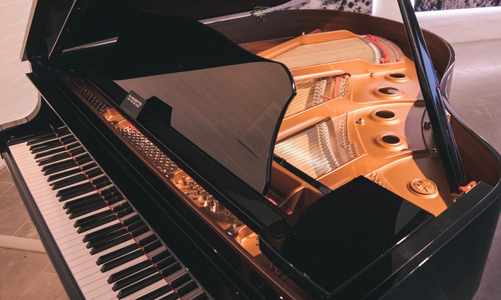
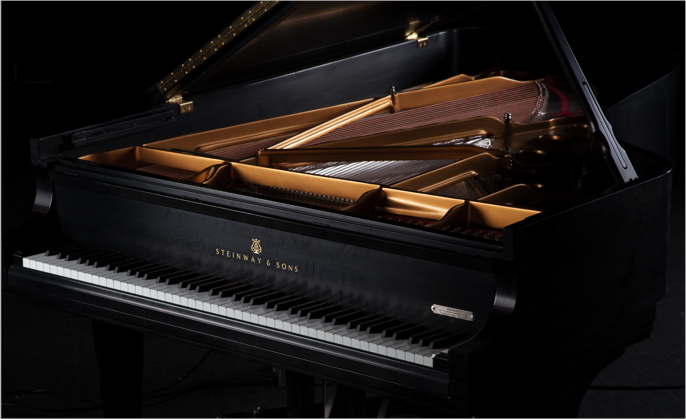
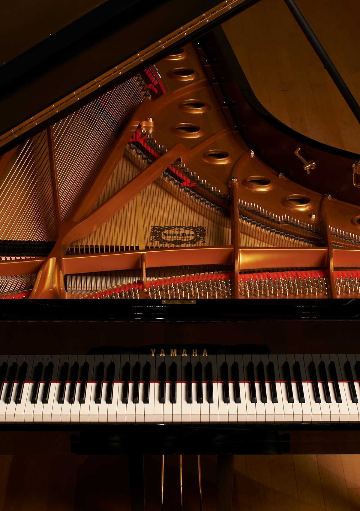
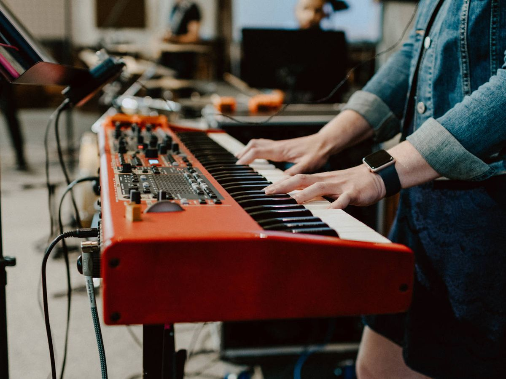

German composer, conductor, pianist and piano teacher. His musical legacy spans, chronologically, from Classicism to the beginnings of Romanticism.
See moreHe was a Polish teacher, composer and virtuoso pianist, considered one of the most important in history and one of the greatest representatives of musical Romanticism.
See moreOne of the most influential of the XIX and early XX centuries. Some authors consider him the first composer to impressionist way, although he categorically rejected the finished.
See more
Composer, pianist, conductor and professor of the former Archbishopric of Salzburg, master of Classicism, considered one of the most influential musicians in history.
See moreI'm amateur pianist, playing piano since I was 7 years old, I started studying piano in Bellas Artes and continued at the conservatory of music of the university of Antioquia for 8 years. In my free time I play works from various contemporary arts.